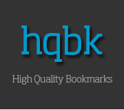
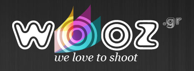
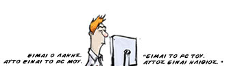

Νέες ελληνικές σελίδες ή και παλιές που τώρα έτυχε να κάνω bookmark στον φάκελο του Webz (Ένας μυστικός φάκελος για upcoming reviews). Για περισσότερες δείτε το παλιότερο άρθρο "Νέες ελληνικές διαδικτυακές υπηρεσίες και ιστοσελίδες" ή το "13 από τις ομορφότερες ελληνικές ιστοσελίδες"
hqbk.net

Το ποιοτικό content πάει πακέτο με τον Γιάννη Κωνσταντακόπουλο και το έχει αποδείξει ήδη (porcupine.gr, CSS3.gr). Καθημερινά, εξαιρετικά ποιοτικά bookmarks εφ' όλης της ύλης και όχι μόνο για Web Geeks. Αξίζει να είναι σε κάθε Feed Reader (or twitter).
Trivia: Χτισμένο με το ExpressionEngine.
Wooz.gr

Μου άρεσε στο about του Wooz που ξεκινάει λέγοντας τι δεν είναι και στη συνέχεια το τι είναι. Δεν είναι λοιπόν κάτι σαν το flickr, ή ένα μέρος για photo sharing και storage. Είναι μια κοινότητα για τους λάτρεις της φωτογραφίας. Ανοιχτή σε όλους, noobs και pro φωτογράφους. Θα βρείτε ένα φιλικό κλίμα, how-tos, πανέμορφες φωτογραφίες και μια συντακτική ομάδα ενεργή!
Trivia: Drupal FTW!
Lakisgr.com

Τον παρακολουθώ από τα πρώτα βήματα. Αλλάζει. βελτιώνεται και μας κάνει να γελάμε. Το πρώτο και μοναδικό ελληνικό-web-geek-comic (4 tags are enough :P) νομίζω.
More sites:
Παρακάτω είναι σελίδες που δυστυχώς δεν πρόλαβα να χρησιμοποιήσω όσο ήθελα για να γράψω κάτι ολοκληρωμένο αλλά θέλω να αναφέρω γιατί μας ζητήθηκε. Οπότε κρίνετε εσείς :)
CoinMad: Για να είμαι ειλικρινής δεν μπόρεσα να καταλάβω απόλυτα τι παίζει. Σίγουρα φαίνεται να υπάρχει όραμα και ζουμί στη συγκεκριμένη "αγορά".
Verido.gr: Αγορά και διαχείριση domain names.
OloiMazoi.eu: Αναφέρω τη σελίδα επειδή ο σκοπός φαίνεται καλός. Κάποιος πρέπει να την επανασχεδιάσει γιατί είναι κακή ακόμα και για το 1996.
article main image by Tim Morgan